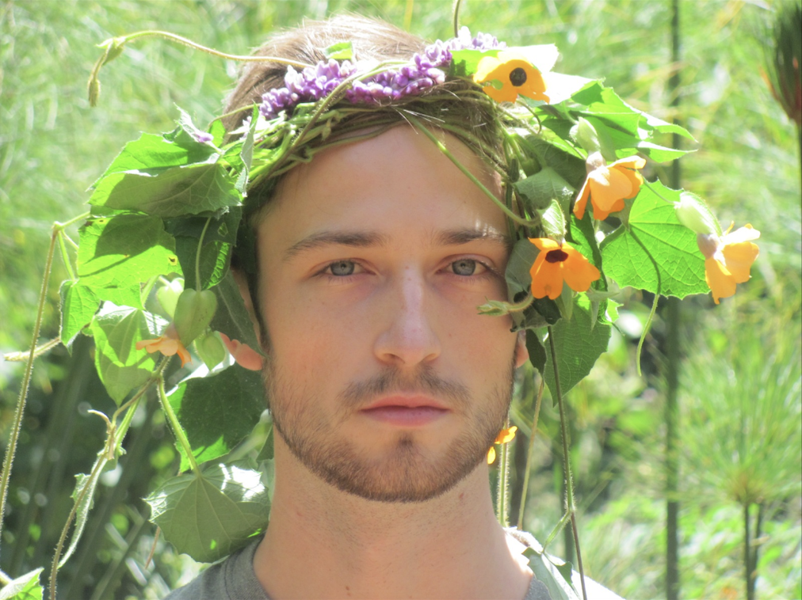
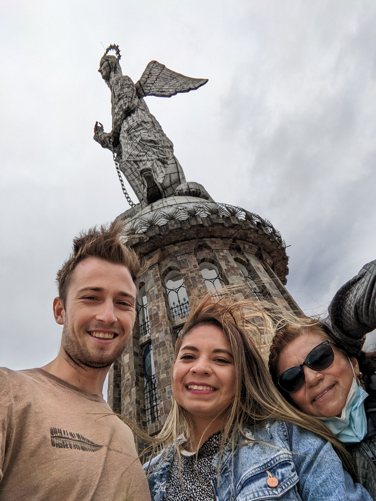

I had the privilege of graduating with great distinction from Brandon University in 2021 while finding time to curl with my friends, as well as participante in various clubs on campus. One of these clubs was the Brandon Enactus Club where I was able to build websites for small businesses in my community and impart on them the knowledge to maintain these sights so they could stay up to date after I was gone. For my thesis at BU I worked on a generative AI model that was capable of taking a classical composition and altering it to produce unique and original music.
After completing my undergraduate degree at Brandon University, I embarked on a new academic journey, pursuing a Master's Degree in Computer Science at the University of Waterloo. During my time at Waterloo, I deepened my understanding of Artificial Intelligence, focusing on my thesis titled "User-Specific Explanations of AI Systems Attuned to Psychological Profiles: A User Study." This research involved an extensive literature review and the creation of an AI model capable of predicting the quantity and method of explanation required by individuals to accept information from an AI system. The subsequent user study demonstrated that my model statistically outperformed alternative prediction methods. Additionally, I engaged in a range of extracurricular activities, including playing quidditch on the university team and participating in various intramural sports like flag football, soccer, and dodgeball with friends. Following the completion of my degree in Spring 2023, I embarked on a transformative journey through Colombia, Ecuador, Peru, and Mexico over several months, immersing myself in diverse cultures and gaining valuable insights. Several of these photos are shown below. I am currently seeking employment where I can leverage the skills honed at these esteemed institutions to contribute to a company's use of AI.